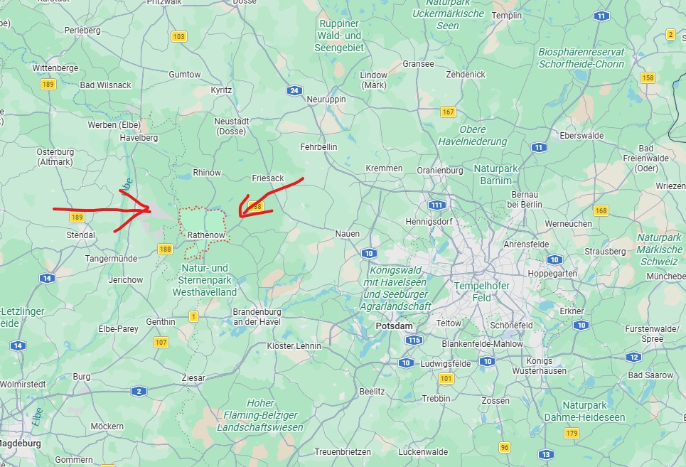

I grew up in Rathenow, a small town on the Havel river in Brandenburg, about an hour west of Berlin – known as the "city of optics" and surrounded by lakes, forests and the wide Havelland landscape.

After school I chose a dual study programme in Business Informatics at HWR Berlin, with Bayer as my practice partner – switching between lectures in Berlin and hands-on phases in different teams at the company. After graduating, Bayer took me on as a Junior HR Data Quality Consultant. Working with HR data every day made me want to go deeper into business intelligence and process management, which is why I started the BIPM Master's programme at HWR alongside my job.
| Period | Programme | Where |
|---|---|---|
| 2023 – 2026 | Dual Bachelor's degree (B.Sc.) in Business Informatics Theory phases at university, practice phases at Bayer | HWR Berlin Practice partner: Bayer AG |
| 2026 – today | Master's in Business Intelligence & Process Management Studying alongside my job at Bayer | HWR Berlin |
| Period | Role / Team | Where |
|---|---|---|
| Practice phase 1 | CoE Diagnostic Imaging Data & AI Dual studies · practice phase at Bayer | Bayer AG |
| Practice phase 2 | Platforms & Capabilities Dual studies · practice phase at Bayer | Bayer AG |
| Practice phase 3 | Pharma Finance R&D Dual studies · practice phase at Bayer | Bayer AG |
| Practice phase 4 | Global Marketing – Kerendia Dual studies · practice phase at Bayer | Bayer AG |
| Practice phase 5 | Project Accounting – Divestments Dual studies · practice phase at Bayer | Bayer AG |
| Practice phase 6 | Pharma Finance R&D / Strategic Outsourcing Dual studies · practice phase at Bayer | Bayer AG |
| 2026 – today | Junior HR Data Quality Consultant Taken on after graduating from the dual programme | Bayer AG |